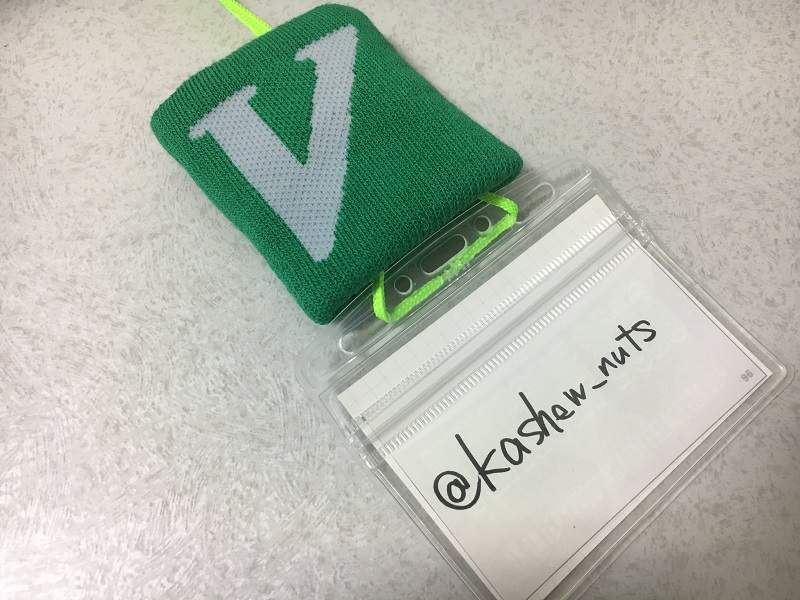

VimConf2016 に参加しました

ujihisa.vimを含めると3年ぶり3回目の参加となったVimConf2016。全部は書ききれないのでメモをとれたやつだけ書きます。
例年の傾向を見てると参加者Blogとかは公式の方にまとめられ、動画もYouTubeの vim-jp にまとめれるようなので後から振り返りたいかたはそちらをチェックされるとよろしいかと。
Introduction to Vim 8.0 by Ken Takata
- Vim 8.0の新機能の紹介および、開発の軌跡について。また、日本人の活躍についても紹介
- 「vim-jpはあなたのコントリビューションをお待ちしております。」
- いちばん楽しかったのは？(@ujm)→DirectX、常にONにしてる。後はspellチェックで日本語の検出を除外する機能。
- vim-jp » Vim 8.0 新機能解説
Vim as the MAIN text editor by bird_nitryn
- 使い始めて1年ぐらい。VSCode→Vimに。Vimはすべてキーボードで操作が完結するのが魅力。
- とにかくVimの機能を使いまくる→vimrcを育てる
- 慣れるために→Vimium導入, vimを触る時間を増やす。
- vimrc: 116行→188行 neobundle→dein。色んな言語を触るようになったのでタブやステータスラインをいじったり。
- 突如始まったvimrc読書会が面白かった（笑）
- 具体的になぜVSCode→Vimに？
- ホストPCがWindowsでvagrantでCentOS。node.jsのパッケージマネージャの制限でフォルダ共有してるとコケる。
- それを叩くたびに味わっていた。共有やめたいCentOS上でいじりたい。
- EmacsかVimか？→じゃあVimだということでVimに。
- これだけは避けた方がいいプラクティスは？
- 宗教戦争はこだわりなので。vimrcをすごく書き込んでる人と育ててる段階の様々な人がいるので、自分と同じぐらいのレベル、自分が読んでわかりやすいレベルのものからやるといい。
- 転向してきてテンションが上がった機能、プラグインは？
- VimFiler。カーソル移動ができる。Vimをいじってる人とすればすごく直観的だった。
Denite.nvim ~The next generation of unite~ by Shougo
- テキストエディタとは何か？「生きる理由。」
- deniteとは何か？unite.vimをフルスクラッチで書き直したもの。Python3で書かれていて、neovim/vim8.0+で動作。
- なぜdenie.nvimを作ろうとした？→”unite.vim slow”
- とくに遅いといわれていた、grepやfile_recが速くなる。候補のサジェストも。
- unite grepでは数十秒→denite.nvimとcpsmで1,2秒に
- unitne.vimがdenite.nvimのソースを持っているのでdenite.nvimはunite.vimを呼べる。
- 次はdeoplete.nvimをVim8.0+に対応予定。
- 他にneosnippet, vinarise, vimshell, vimfilerも対応予定。一番優先度が高いのはvimshell
- if_python3の拡張、WindowIDの機能、etcの機能を安定して使うのにVim8.0+を選んだ。非同期機能はVim8.0で導入された機能ではなくPython3を使っている。
- Shougo/denite.nvim: Dark powered asynchronous unite all interfaces for Neovim/Vim8
- Big Sky :: Vim の CtrlP matcher、cpsm がヤバイくらいに速すぎる
Go、C、Pythonのためのdeoplete.nvimのソースの紹介と、Neovim専用にpure Goでvim-goをスクラッチした話 by zchee
- 「deoplete.nvimのために初めてPythonを触ったのでみなさんもなんとかなります。」
- deoplete.nvimメッチャ補完速い - 脱ネオコンして<C-n>, <C-p>や<C-x>補完で充分と思ってたけどあの速さは心が揺らぐ……
エディタの壁を越えるGoの開発ツールの文化と作成法 by tenntenn
- 「Golang使ってみたことある人どれぐらいいますか？」→結構いる。
- vim歴>Golang歴。社内でvimmerは7人ぐらいであとはほとんどIntelliJ
- GolangのおかげでWindowsでVim使うのが「より」便利になっている印象。(mattn/jvgrep, mattn/files, koron/netupvim, etc…)
vim-mode-plus for Atom editor by t9md
- エディタ遍歴: Vim(Normal) → Emacs(Advanced) → Vim(Advanced) → Atom(with vim-mode-plus)
- 「Vimはすごく小指に易しい。(元Emacsユーザーの意見)」
- あの場にいた誰もが感嘆してたと思う。Vimへの理解はもちろん、それにとどまらず進化させていくのが本当にすごい。
- いずれVimにも逆輸入されるのではないか。
Vimの日本語ドキュメント by MURAOKA Taro
- 翻訳作業にぜひ参加を！比較的簡単なコントリビューションでも手が足りてないので人手がほしい。
- Vim8.0へのキャッチアップ 助力、お願いします。
- vim-jp/vimdoc-ja-working: vimdoc-ja working repository
- vim-jp/lang-ja: Manage Japanese language files which distributed with vim.
Vim script parser written in Go by haya14busa
- Golangはいいぞ！
僕の友達を紹介するよ by aiya000
- いつVimを使い始めたのか覚えてない。学生時代、知らないうちにVimを使い始めていた
- 具体的にいつだったかといわれると確かに……
- 自分の場合はPythonのキラーIDEがなかったから触り始めたのがきっかけだった気がする。
Best practices for building Vim plugins by thinca
- ドキュメントを書きましょう。
- READMEはプラグインの紹介、docにvim自体のhelpを書きましょう。
- vimのnamespaceをしっかりしましょう。 “r”一文字のコマンドにしてたりするプラグインがあったりますが、「そこはお前のものじゃない。」
- autoloadを使いましょう。プラグインいっぱい入れると、そのユーザーのVimの起動がめっちゃ遅くなったり…plugin/xxx.vimは起動時にすべて読み込まれるので、autoloadを使うと起動時間の鈍化が緩和される。
- 省略形はスクリプト内ではやめよう。インタラクティブのためにあるので。
懇親会
- 香川の大学生に「udon.vimを定期開催して、来年のVimConfで発表したらいいですよ！」とそそのかしてきた。
- 大学生3人を含む初参加の人や発表者、スタッフの人と絡んだりお話をきいてこれた。
- @kaoriya, @supermomonga, @iyuuya, @ujm, @ShougoMatsu, etc…
- Vimをもっと使いこなそうと決意した。ひとまずはuser-manualや実践Vimをもっと理解する。
- 無限コーヒーおいしかった。
- 寿司とピザは正義。
https://twitter.com/kashew_nuts/status/794835544874192896